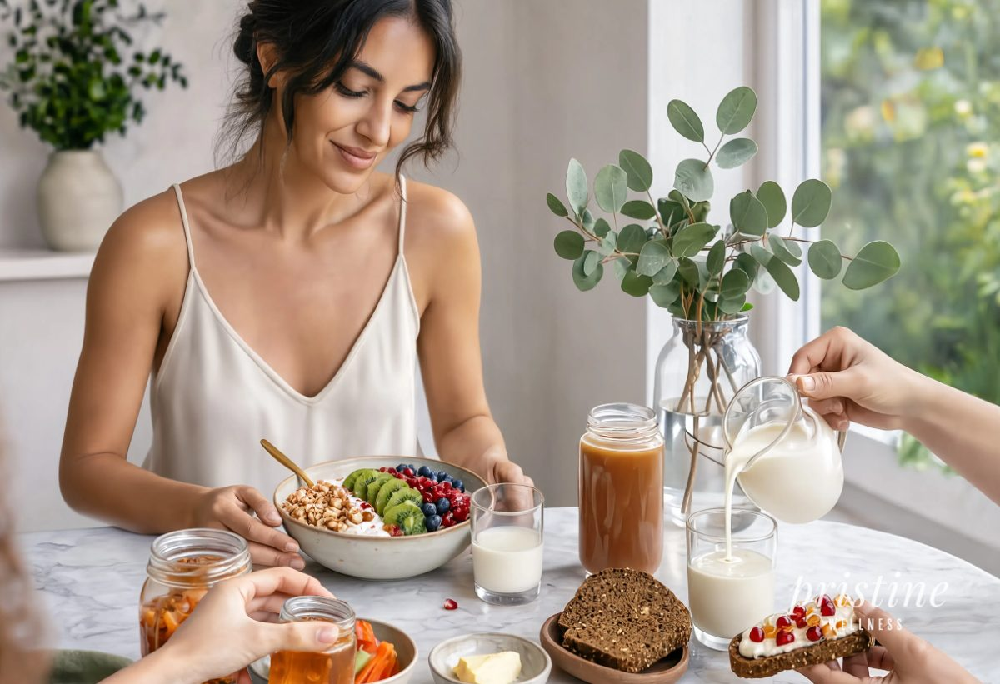
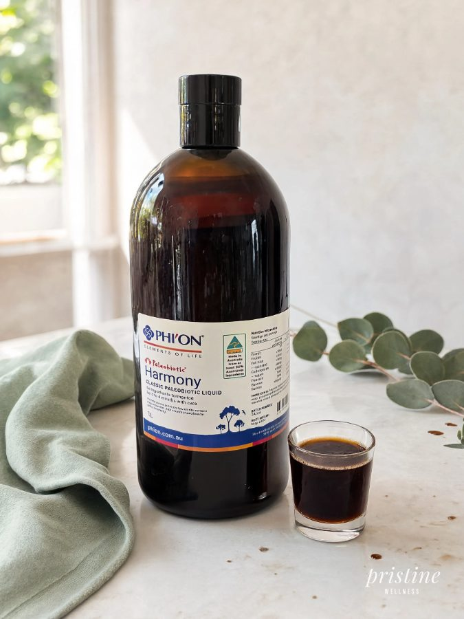
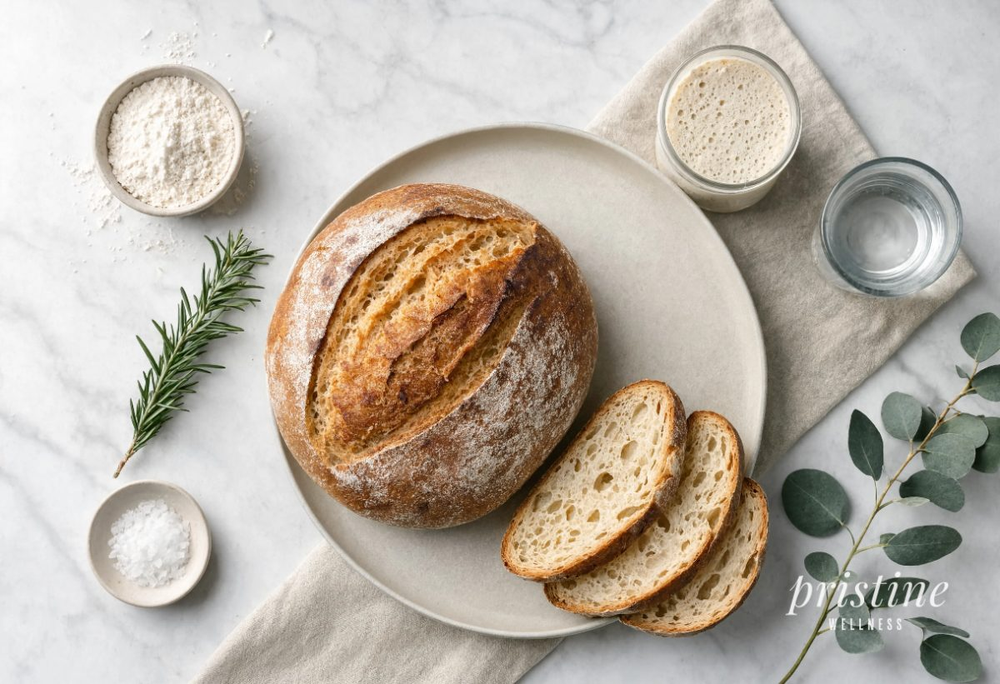

I was sitting in Robert Gourlay's consultation space at his property in Mongarlowe, NSW, sipping on a glass of structured bore water straight from his pristine source on the land, when something just clicked. Robert was explaining the gut microbiome and halfway through I put down my glass and came to the realisation, you are what you eat. Not as a saying. As a biological reality. That one afternoon changed the way our whole family eats, drinks and supplements, and the results have honestly been some of the most noticeable shifts in energy, mood and resilience we have ever experienced as a household.
What Is the Microbiome and Why Should Every Australian Family Care About It
Your gut microbiome is the entire community of microorganisms living inside your digestive tract. Think of it like a rainforest. The healthier and more diverse the ecosystem, the better everything functions. When you start losing species, the whole thing becomes fragile and things go wrong fast.
Science is now very clear on this point. A higher level of microbiota diversity is consistently linked to a reduced risk of chronic diseases [1]. Flip that around and reduced diversity has been observed across conditions including inflammatory bowel disease, Parkinson's disease, COPD, liver disease, obesity, diabetes and cardiovascular disease [2]. That is a sobering list for any parent.
Robert Gourlay, an environmental scientist based in Mongarlowe with over 40 years of experience in alternative health, puts quality food and water at the absolute centre of his health philosophy [3]. Sitting with him and hearing this explained plainly, in a space that practically radiates calm and intention, it lands differently than reading a study abstract ever could.

Why Fermented Foods Are the Old Answer to a Very Modern Problem
Fermented foods have been part of human diets for almost 10,000 years [4]. Our ancestors were not doing it for a health trend. They were preserving food and, it turns out, accidentally building extraordinary gut resilience in the process. The modern Western diet has quietly stripped most of that out.
When you eat fermented foods, you are introducing beneficial microbes and bioactive compounds directly into your gut, which boosts microbial diversity, resilience and barrier function [5]. Think of the gut lining like a security fence around your body. Fermented foods help keep that fence in good repair. When the fence weakens, things get through that should not.
Fermentation also produces short-chain fatty acids, or SCFAs, which are basically the fuel your gut lining runs on. They also help regulate immune responses and reduce inflammation throughout the whole body [6]. In our house, we started thinking about fermented foods not as a trendy add-on but as a daily non-negotiable, right alongside water and sleep.
The Stanford Study That Changed How We Think About Inflammation
A landmark clinical trial out of Stanford School of Medicine found that a 10-week diet high in fermented foods significantly boosted microbiome diversity and improved immune responses in healthy adults [7]. That is not fringe research. That is one of the world's top universities showing measurable immune improvements through food.
What really got our attention was the inflammation side of it. The study found that four types of immune cells showed less activation in the fermented food group, and levels of 19 inflammatory proteins in the blood also decreased [8]. One of those proteins, interleukin-6, is linked to rheumatoid arthritis, Type 2 diabetes and chronic stress. Just from eating things like yoghurt, kimchi, kefir and fermented vegetables.
Low microbiome diversity has also been specifically linked to obesity and diabetes in that same body of research [9]. My wife noticed it first in our kids. Once we got serious about fermented foods and probiotics as a family, the constant sniffles, the flat energy after school, the minor digestive grumbles, they just quietly faded. We did not change everything overnight but the cumulative difference has been immense.
Your gut is not just a digestive organ. It is a community. The more diverse that community, the more resilient you are to almost everything life throws at you.Mr Wellness

Robert Gourlay's Harmony: What a Properly Fermented Liquid Probiotic Actually Does
Robert has spent over two decades developing his Phi'on health products on 110 acres in the Mongarlowe Valley, creating nutrient-dense formulations using structured water to support the body's natural capacity to regulate and heal at a cellular level [3]. His fermented paleobiotic liquid, Harmony, is the product I keep coming back to because the thought and process behind it is unlike anything else in the market.
Harmony is Robert's original fermented liquid paleobiotic formulated for the whole family [10]. It is fermented over three to four months, which is a commitment most commercial producers simply will not make. That extended fermentation window allows the microbial cultures, fermented herb extracts, phytonutrients and minerals to develop in a way that a quick capsule fill simply cannot replicate [10]. Robert's own testing has shown the Phi'on paleobiotics to be 370 percent higher in microbial gut activation than other leading brands [11]. That is not a small margin.
As Robert himself says, his primary role is to educate people on how to live a healthier and longer life without disease and expensive health costs [3]. Harmony sits at the centre of his protocol alongside structured water, oxygen and magnesium sprays, because he understands that the gut is the foundation everything else is built on. We added Harmony into our family routine and within a few weeks my wife and I both commented, independently, that something had shifted. Digestion, sleep quality, how quickly the kids bounced back from minor bugs. It all moved in the right direction.

Fermented Foods Plus a Quality Liquid Probiotic: The Stack That Makes Sense
Fermented foods and a quality liquid probiotic like Harmony are not competing ideas. They are complementary layers. Fermented foods deliver a complex ecosystem of live microbes and bioactive metabolites that interact with your resident gut microbiota in ways no single-strain supplement can fully replicate [12]. A good liquid probiotic then comes in alongside that and reinforces the work being done at a deeper cellular level.
The broader fermented food ecosystem, from kimchi to kefir to sauerkraut, supports the growth of beneficial bacterial families like Bifidobacterium, Faecalibacterium and Akkermansia, while also suppressing pathogen growth and supporting mucosal integrity [6]. Your gut lining is one cell thick in places. One cell. Keeping that lining healthy and the microbial community around it diverse is arguably the most important daily health act most of us are not thinking about.
In our house the practical changes were not dramatic. A tablespoon of sauerkraut with dinner. Kefir in the morning smoothies. A small daily dose of Harmony. These are tiny acts that compound over months into a noticeably different baseline of health. Robert told me that for people who cannot keep up with every health factor, structured water and probiotics alongside oxygen and magnesium support are the most foundational things to prioritise, and after living that protocol I genuinely agree.
Practical Steps: How to Actually Build More Diversity Starting This Week
The research is consistent that even short-term changes in diet can rapidly alter the gut microbiome [8]. You do not need a complete dietary overhaul. You need a consistent addition of the right things. Start with one or two fermented foods per day and get a quality liquid probiotic in the mix.
For fermented foods, think traditionally made yoghurt, kefir, kimchi, miso, sauerkraut, tempeh and kombucha. Variety matters here. Different fermented foods carry different microbial communities and each one adds something slightly different to your internal rainforest. Aim to rotate across a few over the course of a week rather than eating the same thing every single day.
For the probiotic layer, Harmony by Phi'on is our first recommendation for anyone serious about gut health. The extended three to four month fermentation process, the structured water base, the combination of beneficial cultures, fermented herb extracts, phytonutrients and minerals all make it stand apart from the capsule-and-powder market [10]. My kids now ask for their morning dose without being reminded, which tells you everything about how something can shift from a chore into a habit when the results are real.
The saying has been around forever but most of us never really understood it until now. You are what you eat is not a guilt trip about chips and chocolate. It is a precise biological statement about what you are feeding the trillions of microorganisms that run your immune system, your mood, your energy and your long-term health. Getting more fermented foods into the daily routine and pairing them with a genuinely well-made liquid probiotic like Robert Gourlay's Harmony is one of the most evidence-backed, practically achievable things any family can do right now. We did it. The difference is real. And it started with a glass of good water and a conversation in Mongarlowe.
No results for "' + q + '"
Sources
- 1.Understanding gut microbial diversity using systems based on the Constrained-Disorder Principle , Frontiers in Microbiology, 2025
- 2.Understanding dysbiosis and resilience in the human gut microbiome: biomarkers, interventions, and challenges , Frontiers in Microbiology, 2025
- 3.Robert and Stephanie Gourlay: About Phi'on Elements of Life , Phi'on Elements of Life
- 4.Fermented Foods, Health and the Gut Microbiome , Nutrients, MDPI, 2022
- 5.Fermented Foods as Functional Systems: Microbial Communities and Metabolites Influencing Gut Health and Systemic Outcomes , Foods, MDPI, 2025
- 6.Fermented Foods as Functional Systems: Microbial Communities and Metabolites Influencing Gut Health and Systemic Outcomes (PubMed) , PubMed, 2025
- 7.Fermented-food diet increases microbiome diversity, decreases inflammatory proteins, study finds , Stanford Medicine News, 2021
- 8.Fermented-food diet increases microbiome diversity, decreases inflammatory proteins, study finds , Stanford Medicine News, 2021
- 9.Fermented-food diet increases microbiome diversity, decreases inflammatory proteins, study finds , Stanford Medicine News, 2021
- 10.Harmony Classic Paleobiotic Liquid 500ml , Elements4Life / Phi'on
- 11.Why are Phi'on products unique? , Elements4Life / Phi'on
- 12.Fermented Foods as Functional Systems: Microbial Communities and Metabolites Influencing Gut Health and Systemic Outcomes , Foods, MDPI, 2025